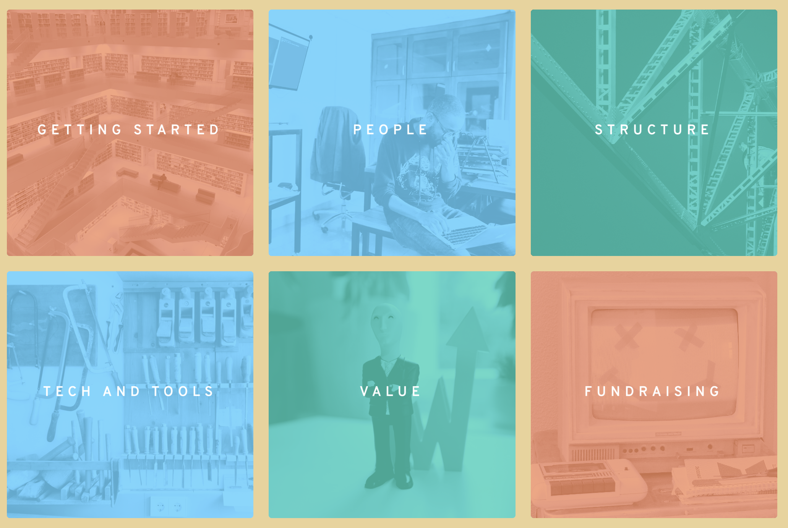
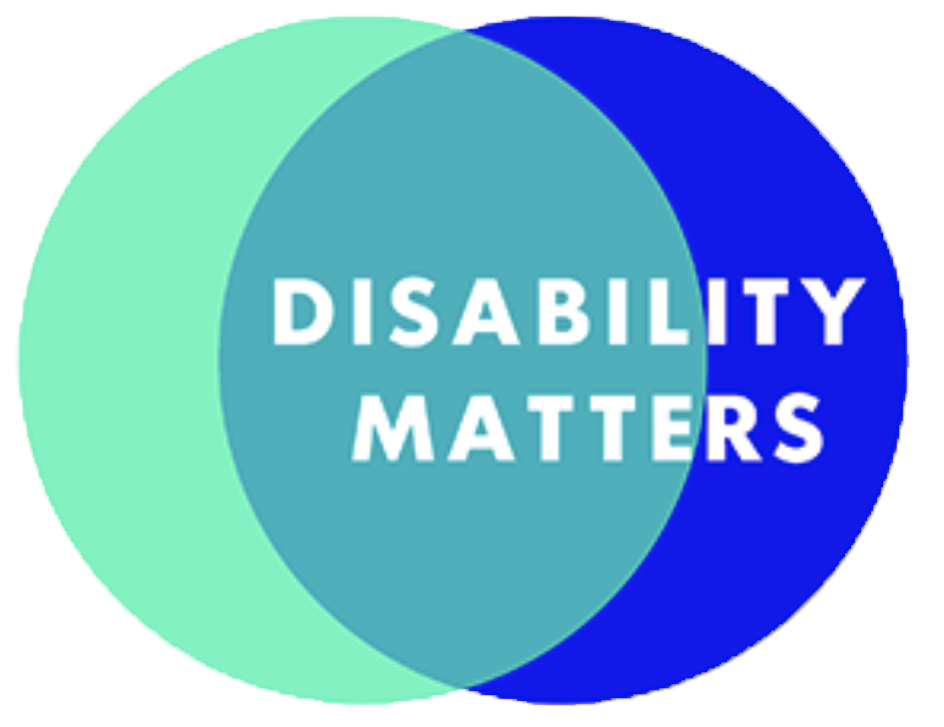
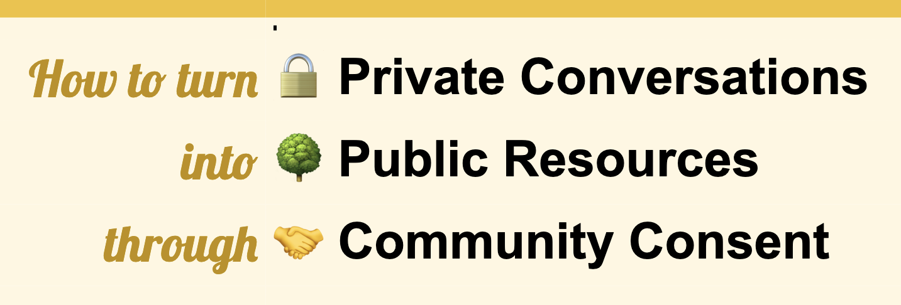
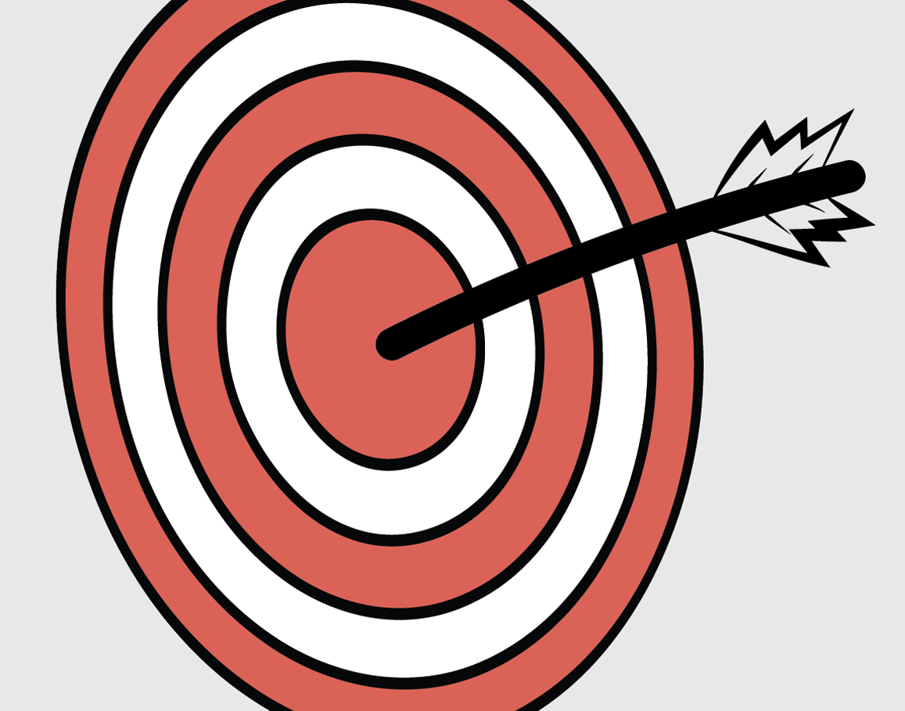
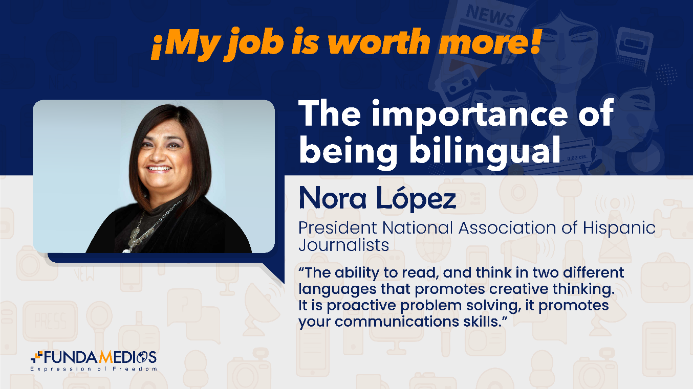

Prison Journalism Navigator
The Prison Journalism Navigator provides resources to train and collaborate with your local incarcerated community to produce journalism.
It includes sections on Communicating with Prison Journalists, Contacting People Inside by State, Incarceration Data and Other Resources, A Reporter’s Glossary of Prison Jargon and more.
2021 RJI Fellow Yukari Kane

The YESEO app
This Slack based app is free to use and installable in any workspace.
This tool utilizes slash commands in Slack to gather actionable SEO information and insights from your articles and content.
Workshop headlines, view SEO data and identify trends. Available in English, French, Spanish and Portuguese.
2022 RJI Fellow Ryan Restivo

Youth Media Starter Guide
A toolkit for public radio newsrooms ready to invest in youth media programs.
We aim to support newsrooms as they create or expand youth media programs to train and invest in the next generation of journalists, as well as engage future listeners, leaders, and supporters of public media.
2022 RJI Fellows Kelsey Tolchin-Kupferer & Mary Heisey

Data Unit Guide
This is DUG, an organizational guide to data journalism for small-to-medium and non-profit newsrooms.
Does your newsroom want to build a data team? You've come to the right place. DUG will guide you through getting started, fundraising, tech, tools and more.
2020 Fellow Clayton Aldern
Journalism Source of Safety
Journalism Source of Safety (J-SOS) is an online toolkit that offers trauma-informed and identity-aware journalist safety checklists, tips, gear advice, and other necessary security information for all journalists, including freelancers and students, with an emphasis on equity and ethics.
2022 RJI Fellow Tara Pixley

Disability Matters
A toolkit for newsrooms to better serve the disability community.
This toolkit was produced as a starting point for journalists or news organizations looking to improve coverage of disability and the accessibility of news products.
The first half of this toolkit is focused on improving coverage of disability. The second half is focused on making journalism more accessible.
2021 RJI Fellow Hannah Wise
News Executive Leadership Transition Guide
Get started with this guide to start your succession planning and be ready for leadership transitions.
This planning guide was created for small, independent local nonprofit and for-profit news organizations to help them grow into mature, thriving businesses that serve their communities and transition gracefully past their founding, startup stage.
2022 RJI Fellow Amy L. Kovac-Ashley

How to turn private conversations into public resources through community consent
Many times, it is only because a conversation was off the record, that we are able to learn the most — and after learning it, we realize that the broader community could benefit from learning it too.
So how do we share knowledge from conversations we all agreed would be private, in a way that builds more trust instead of tearing it down? This guide shares one possible process.
2021 RJI Fellow Sisi Wei
Guide: Build a local real estate development news app with airtable
This guide will show you how to build a reader engagement-fueled news app to track and map local real estate development. It is hosted on a blank, open-source template site you will be able to customize to build a tracker for your city, using open-source or freemium tools.
It is designed for small, local news publishers with limited resources who want to bootstrap a news app, but anyone is welcome to try it out. Read the guide to learn how and get started.
2021 RJI Fellow Kate Abbey-Lambertz

Solutions Journalism Toolkit
If the missing parts of the public conversation include “What could be done about this? Who is doing a better job handling this problem?” then it’s a good candidate for a solutions journalism piece.
This toolkit will help you learn the basics of solutions journalism and how to utilize it in your newsroom for the benefit of the communities you serve.
2020 RJI Fellow Carolyn Robinson

The Fundamedios Paygap Toolkit
A toolkit for Latina journalists and training sessions to reduce the pay gap.
Through eight months of research we found that latino journalists do the same job as their white peers with fewer resources, and less pay. In addition, the intersectionality of race and gender results in cumulative discrimination against female journalists who are of Latino origin, who earn on average 37% less than their white male peers. To address this issue, Fundamedios created a toolkit to train journalists to improve their negotiation skills.
2020 RJI Fellow Dagmar Thiel, Fundamedios
Apply for a RJI Fellowship
Do you have an idea that addresses a current gap, challenge or need in journalism? The RJI Fellowship will give you the time, support and funding to build a practical resource to address the issue for journalism.
Remote Fellowships are $25k and residential fellowships are up to $100k.
Apply to be a RJI Fellow! Applications open Jan 2 2024.